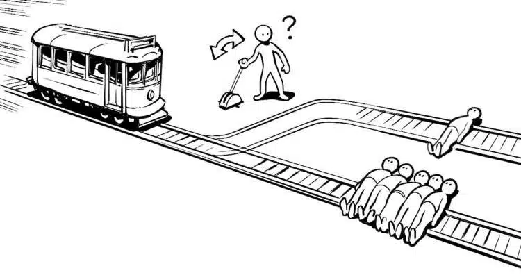

¿Qué son los sistemas morales?
Se refieren a conjuntos de principios, valores y reglas éticas que guían el comportamiento de individuos o grupos en cuestiones morales y éticas. Estos sistemas proporcionan un marco de referencia para determinar lo que es correcto o incorrecto, bueno o malo en una sociedad o en la vida de una persona.
Algunos sistemas morales son:
- UTILITARISMO.

Es una teoría ética que sostiene que la acción correcta es aquella que maximiza la felicidad o el bienestar general. Esta perspectiva ética se centra en las consecuencias de las acciones y busca producir el mayor bien para el mayor número de personas.
Principales características del utilitarismo:
- Principio de la utilidad: Establece que una acción es buena en la medida en que tiende a aumentar la felicidad o el bienestar general y es mala en la medida en que tiende a disminuirlo.
- Consecuencialismo: El utilitarismo es una forma de ética consecuencialista, ya que evalúa la moralidad de una acción basándose en sus resultados o consecuencias.
- Maximización de la felicidad: La meta principal del utilitarismo es maximizar la felicidad o el placer total y minimizar el sufrimiento. Esto implica considerar tanto la cantidad como la calidad de la felicidad.
- Cálculo de utilidad: Aunque el utilitarismo aboga por la maximización de la felicidad, no siempre es fácil medir o comparar la felicidad entre diferentes personas o situaciones.
- Preocupación por las minorías: Aunque el utilitarismo busca maximizar el bienestar general, existe la crítica de que puede descuidar los derechos y la felicidad de las minorías, ya que podría justificar acciones que benefician a la mayoría a expensas de unos pocos.
- Utilitarismo actuarial y reglamentario: El utilitarismo actuarial evalúa cada acción individualmente, mientras que el utilitarismo reglamentario se enfoca en establecer reglas generales que, cuando se siguen, tienden a maximizar la felicidad.
- LA MORAL ALTRUISTA.
Se basa en el principio de actuar en beneficio de los demás, sin esperar un beneficio personal directo. El altruismo es una perspectiva ética que destaca la importancia de la consideración y el cuidado hacia los demás.
Perspectivas y corrientes éticas que abogan por el altruismo:
- Ética altruista: Sostiene que las personas deben actuar de manera que promuevan el bienestar de los demás, incluso a costa de sus propios intereses.
- Utilitarismo altruista: Desde una perspectiva utilitarista, se puede adoptar un enfoque altruista si las acciones buscan maximizar la felicidad o el bienestar general, independientemente de quién sea el beneficiario.
- Altruismo recíproco: Se basa en la idea de que las personas pueden beneficiarse a largo plazo al ayudar a los demás, ya que existe la posibilidad de recibir ayuda a cambio en el futuro.
- Ética de la compasión: Se centra en el sentimiento de compasión hacia los demás y aboga por actuar de manera compasiva en respuesta al sufrimiento y las necesidades de los demás.
- Altruismo efectivo: Es un movimiento que busca maximizar el impacto positivo en el mundo mediante la aplicación de la lógica y la evidencia para determinar las formas más efectivas de ayudar a los demás.
- Ética del cuidado: Pone énfasis en las relaciones interpersonales y aboga por actuar con sensibilidad y responsabilidad hacia los demás.
- LA MORAL CRISTIANA.
Se basa en los principios éticos y enseñanzas derivados de la fe cristiana, centrada en la figura de Jesucristo y en las Escrituras Sagradas, especialmente la Biblia. Es importante destacar que hay diversas denominaciones cristianas, y las interpretaciones específicas de la moral cristiana pueden variar.
Principios y valores morales comunes:
- Amor y caridad: Este principio se deriva de las enseñanzas de Jesús, quien lo destacó como uno de los pilares de la moral cristiana.
- Justicia y equidad: Se alienta a los cristianos a tratar a los demás con justicia, mostrando compasión y preocupación por los menos afortunados.
- Humildad y servicio: Se anima a los cristianos a seguir el ejemplo de Jesús, quien lavó los pies de sus discípulos y sirvió a los demás.
- Respeto por la vida: La moral cristiana valora la vida humana y aboga por la protección de la vida desde la concepción hasta la muerte natural.
- Fidelidad y honestidad: La moral cristiana destaca la importancia de la fidelidad en las relaciones y la honestidad en todas las interacciones.
- Paz y perdón: Se anima a los cristianos a buscar la reconciliación y a perdonar a quienes los han agraviado, siguiendo el ejemplo de Jesús.
- Purificación y arrepentimiento: La moral cristiana reconoce la realidad del pecado y enseña que el arrepentimiento y la purificación son fundamentales para restaurar la relación con Dios.